Morphology and word-formation
Introduction to linguistics
open slides download slides (pdf)
Morphology
Morphology and word-formation
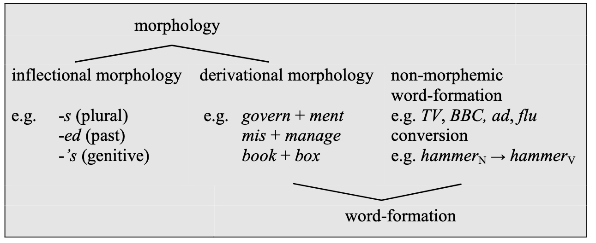
Object of study
“Morphology is concerned with the internal structure of words and with the various processes which allow us to constantly expand the vocabulary of a language.” (Kortmann 2020: 51)
Morphemes
“Morpheme: The basic morphological unit is not the word, but the morpheme (Greek morphé = shape, form), the smallest meaning-bearing unit of language.
Thus, the word singers contains three morphemes: {sing}, {-er}, and {-s}. Each of these three morphemes adds to the overall meaning of singers:
- the verb {sing} makes the central contribution,
- while {-er} on its own means no more than ‘someone who VERBs’,
- and the {-s} merely gives grammatical information, namely plural.”
(Kortmann 2020: 51)
Inflectional morphology
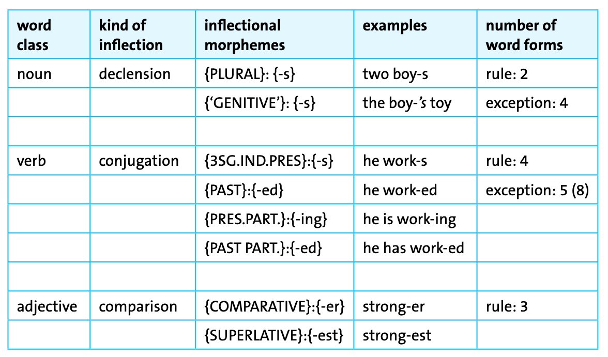
Allomorphs
- “Morphemes vs (allo-)morphs: On the level of morphology, morphemes are the exact counterpart to phonemes on the level of phonology.
- Just like phonemes, morphemes are abstract units which can be realized by more than one form.
- Just think of the plural morpheme in word forms like kids, kits, and kisses, where it is realized as /-z/, /-s/, and /-ɪz/ respectively.
- These concrete realizations of morphemes are called morphs, and in analogy to the allophones of a phoneme we speak of the allomorphs of a morpheme”
(Kortmann 2020: 51)
Word, word form, lexeme
- “Word – word form – lexeme: The example singers also serves to show how important it is to deal with the term word in a more differentiated way.
- Is singers a different word from singer? No, singers is merely a different form, a so-called word form, of the noun singer.
- Singer itself, on the other hand, is not merely a word form of sing, but a different, new word, which has been formed by affixation of {-er} to the verb.
- In this case, we speak of a new lexeme with a new dictionary entry which has been created by a specific derivational process.”
(Kortmann 2020: 51)
Types of morphemes
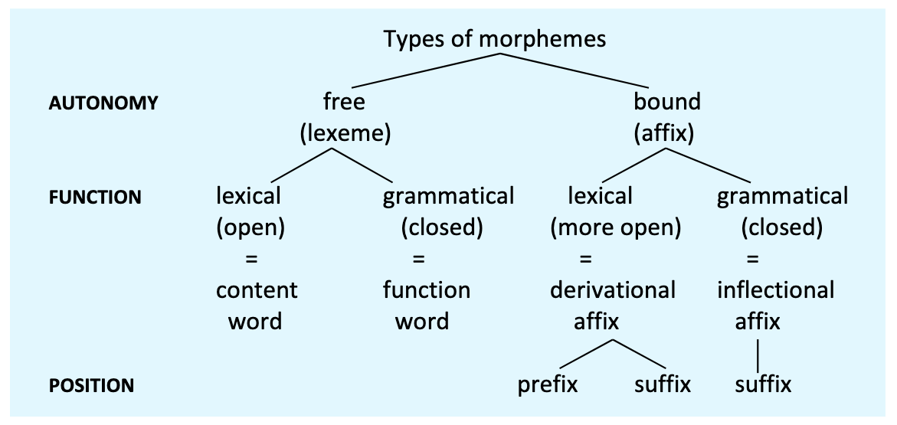
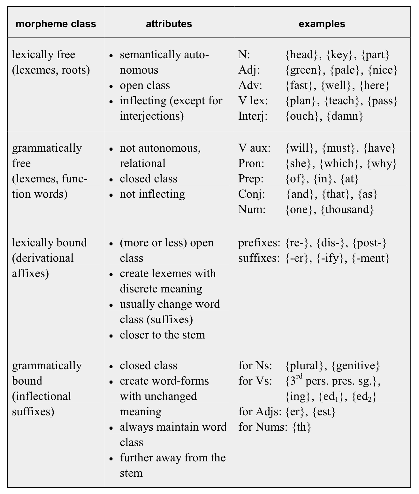
Exercise: determine morpheme types
Divide the words below into their component morphemes and classify them.
- signpost: {sign}lx.fr {post}lx.fr
- cats: {cat}lx.bd {plural}gr.bd
- they: {they}gr.fr
- singer: {sing}lx.fr {er}lx.bd
- finger: {finger}lx.fr
- funnier: {funny}lx.fr {er}gr.bd
- undeniable: {un}lx.bd {deny}lx.fr {able}lx.bd
Special types of morphemes
Portmanteau morphemes
- morphemes that carries several meanings simultaneously
- i.e. that carry information which is usually expressed by way of two or more morphemes
- e.g. took, taught
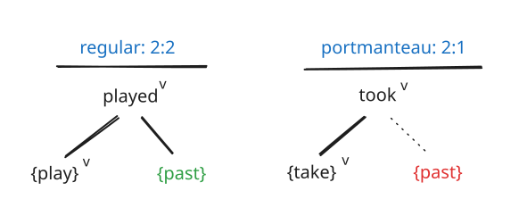
Zero morphemes
- an inflectional or word-formation morpheme lacking phonetic substance
- e.g. {plural} morpheme in two sheep
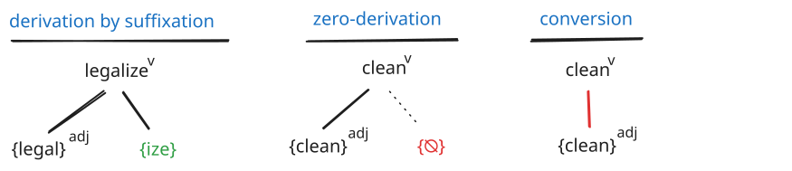
Base, root, stem
Example: removals
- “What remains once all inflectional suffixes (here plural {-s}) are taken away is the stem.
- What remains when taking away all affixes ({-re}, {-al} and {-s}) is the root, which is the minimal lexical unit and cannot be morphologically analysed any further.
- What remains if individual derivational affixes are taken away from the stem (here: {-al} from removal) is called the base in the narrower sense - which is still larger than the root.”
(Kortmann 2020: 54)
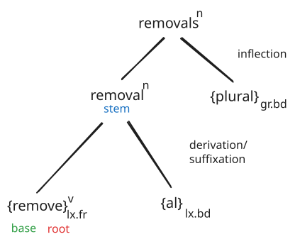
Exercise: determine base, root, stem
Determine the base, root, and stem of the word formalities.
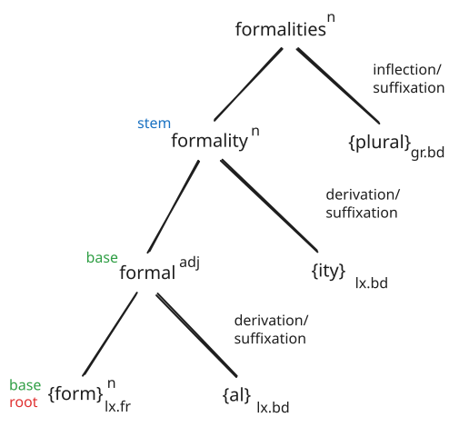
Allomorphs
Complementary distribution
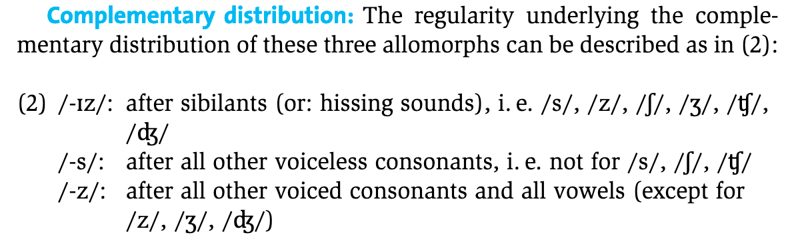
Plural allomorphs
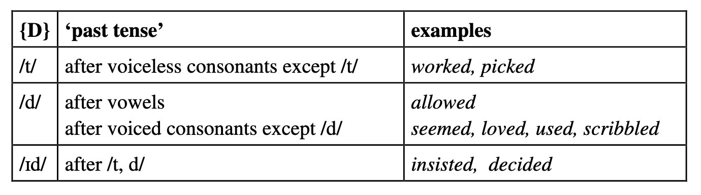
Past tense allomorphs
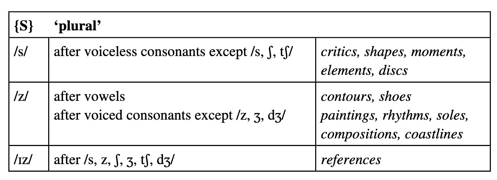
Overview of allomorphy in English
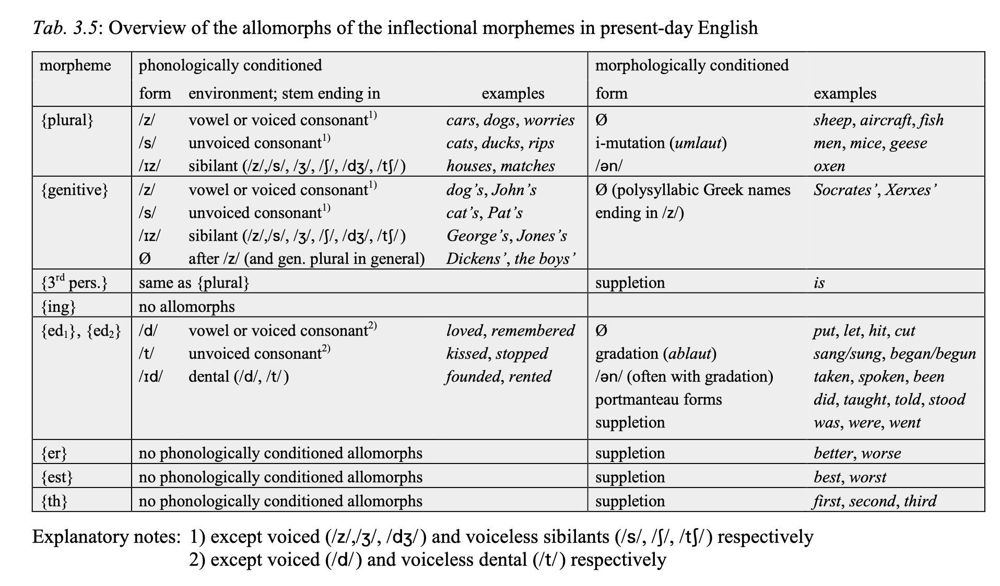
Irregular allomorphs
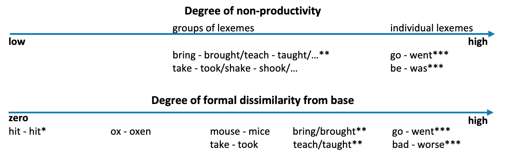
Phonological conditioning of allomorphs
Types
- “affix allomorphy, where a particular free morpheme, i. e. base, demands the choice of a particular (form of a) bound morpheme,
- and base allomorphy, where, vice versa, a particular affix (be it derivational or inflectional) demands the choice of a particular form of the base.”
(Kortmann 2020: 58)
Examples
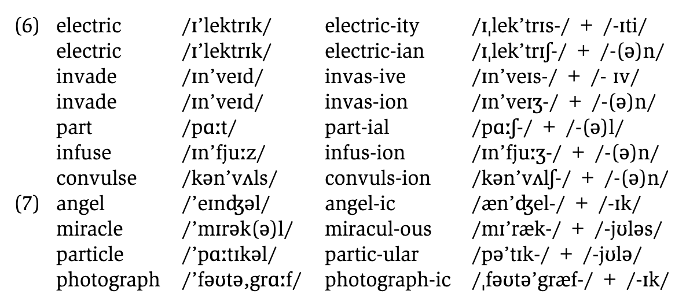
(6): Consonant change of the final sound of the base due to coarticulation.
(7): Vowel changes of the base due to stress shift triggered by derivation.
Exercise: analyse plural allomorphs
In which way do the plural forms of the following nouns differ?
cat, horse, woman, mouse, dog, book, fish, orange, apple, car, child, tax, ox, cliff, deer
Options:
/s//z//ɪz/- irregular
Solution
| 1. /s/ | 2. /z/ | 3. /ɪz/ | 4. irregular |
|---|---|---|---|
| cats | dogs | horses | women |
| books | apples | oranges | fish |
| cliffs | cars | taxes | children |
| oxen | |||
| deer | |||
| mice |
Morphological language types
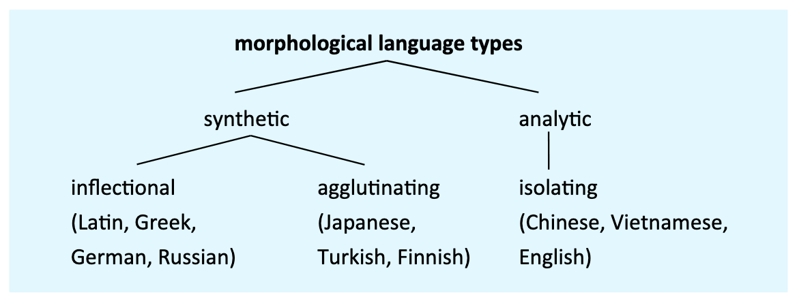
Morphology Review Quiz (Interactive)
Word-formation
Morphemic word-formation
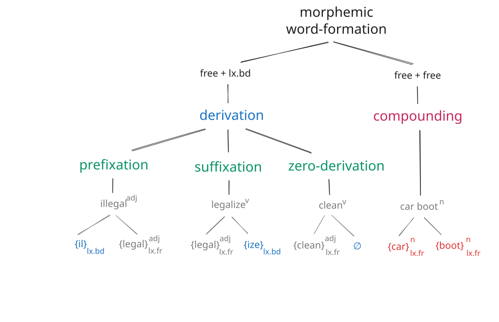
Derivation
Derivation vs inflection
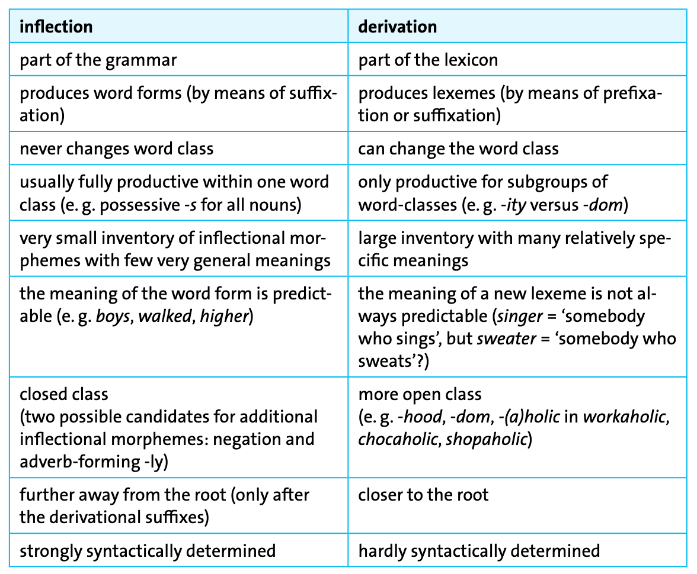
Prefixation
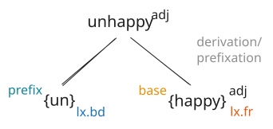
- formal structure
- prefix: {A}lx.bd
- base: {B}lx.fr
- function
- modification of meaning
- usually word-class preserving (exceptions: asleep, enlarge)
Morphemes
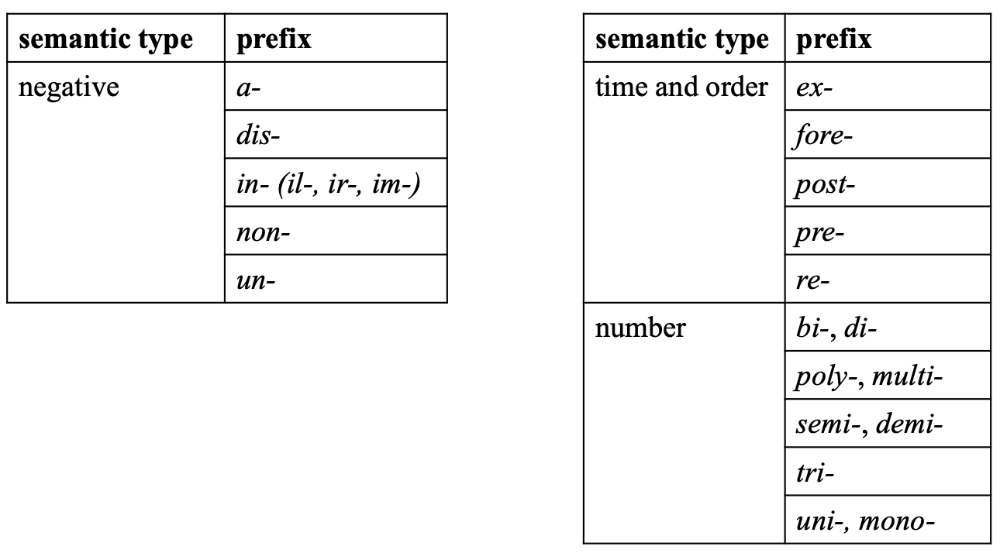
Suffixation
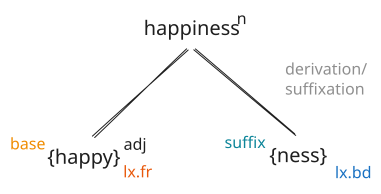
- formal structure
- base: {A}lx.fr
- suffix: {B}lx.bf
- function
- (abstract) modification in meaning (e.g. concept type)
- often word-class changing (exceptions: greenish, kingdom)
Examples
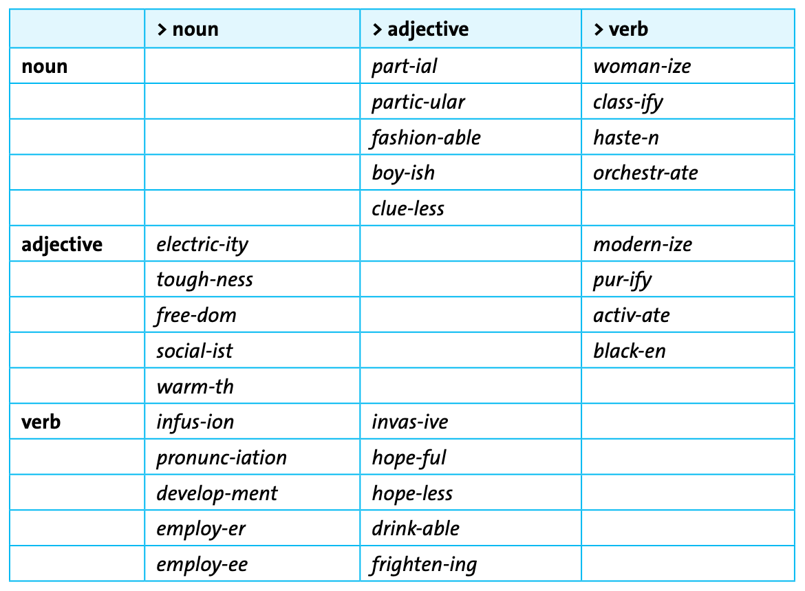
Compounding
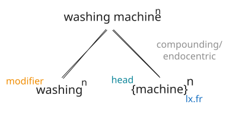
Endocentric compounds
- semantic structure: ‘a certain type of machine: for washing’
- head: machine
- determines word class: machinen > washing machinen
- stem for inflectional suffixes: washing machines, not *washings machine
- modifier: washing
- qualifies head semantically
- often carries primary stress
Examples
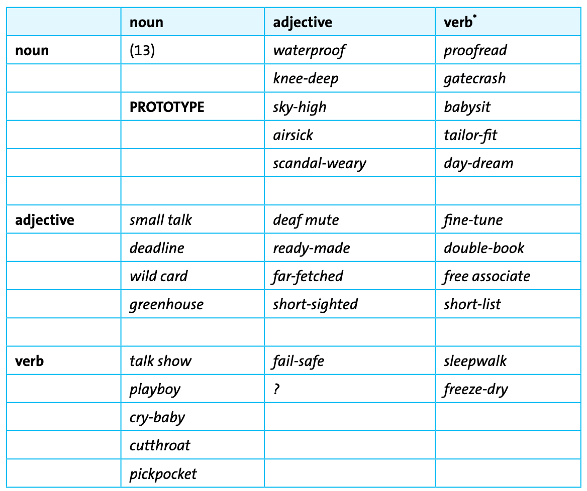
Semantic types
- endocentric compounds
- structure: A + B denotes a special kind of B
- examples: darkroom, small talk
- exocentric compounds
- structure: A + B denotes a special kind of an unexpressed semantic head (e. g. ‘person’ in the case of skinhead or paleface)
- these compounds often have metonymic character, when one part stands for the whole (e. g. paleface for ‘a person with a pale face’)
- examples: egghead, blockhead, blackhead, birdbrain, redneck, greenback, paperback
- appositional compounds
- structure: A and B provide different descriptions for the same referent
- examples: actor-director, actor-manager, writer-director, poet-translator, maidservant
- copulative compounds
- structure: A + B denotes ‘the sum’ of what A and B denote, i. e. the denotation of a copulative compound would be incomplete with one of the two elements A and B missing
- examples: spacetime, tractor-trailer, deaf mute, sleepwalk, freeze-dry
(Kortmann 2020: 65)
Exercise
Use the following terms to describe the meaning relationship between the component parts of the compounds below:
endocentric — exocentric — appositional — copulative compound
- greenhouse: endocentric
- knee-deep: endocentric
- pot head: exocentric
- Alsace-Lorraine: copulative
Non-morphemic word-formation
Overview
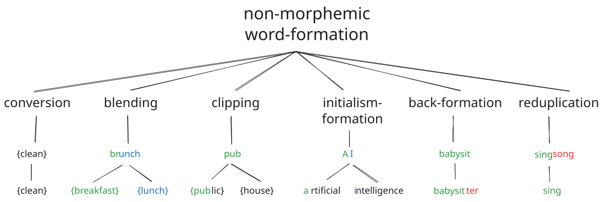
| Process | Features | Examples |
|---|---|---|
| Clipping | parts of words are deleted without a change in meaning | bike, exam, fridge |
| Blend | forms and meanings of words are merged | smog, brunch |
| Acronym | shortened form retaining the initial letters of compounds or other fixed sequences of words; pronounced as words | NATO, laser, AIDS |
| Alphabetism | shortened form retaining the initial letters of compounds or other fixed sequences of words; pronounced as sequences of letters | CNN, OED, USA |
| Back-formation | word-class-changing word-formation process which deletes a morpheme or morpheme-like element; longer form pre-existing | babysittern > babysitv |
| Reduplication | rare word-formation process repeating a word or word-like element either identically or in a slightly varied form | walkie-talkie, hip-hop |
Shortenings
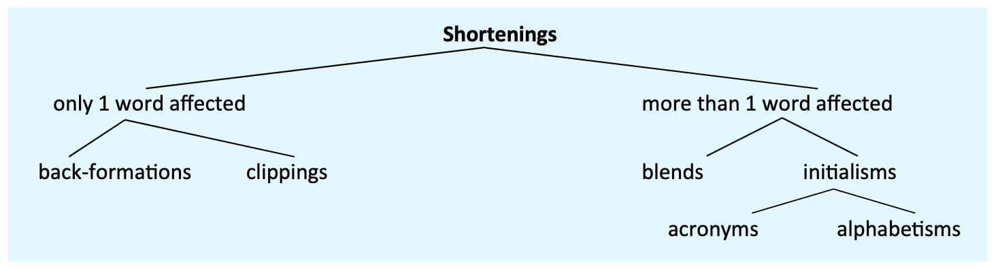
Differences between morphemic and non-morphemic word-formation
| Feature | Morphemic WF | Non-morphemic WF | Examples |
|---|---|---|---|
| Building blocks | morphemes | parts of words | br-unch |
| Combination | adding morphemes | removing parts | in-flu-enza |
| Serialization | concatenative | interspersed | CHuckLE x snORT |
| Regularity | clear rules, predictable patterns | heterogeneous, high variability | Br-angelina |
| Cognitive processing | largely unconscious | conscious coining | BBC |
Productivity
The degree to which a certain word-formation process is being employed to form new words.
Examples
Still productive: suffixation with {ness}:
- {kind}{ness}
- {happy}{ness}
- {brave}{ness}
- …
No longer productive: suffixation with {th}:
- {strong}{th} > strength
- {long}{th} > length
- {wide}{th} > width
- …
Transparency
The degree to which there is a clear (transparent) mapping between the form and function/meaning of linguistic units.
Examples
transparent:
- player: ‘somebody who plays’
- wine bottle: ‘a bottle of wine’
intransparent/opaque:
- caretaker: *‘somebody who takes care’
- undertaker: *‘somebody who undertakes sth.’
- to kick the bucket: *‘to strike a bucket with your foot’
Morphological analysis
singer-songwriter
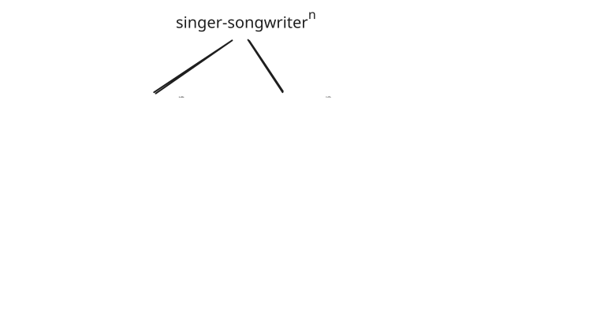
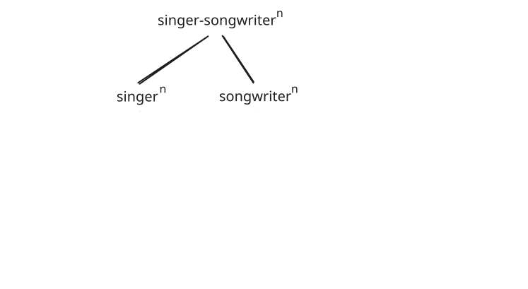
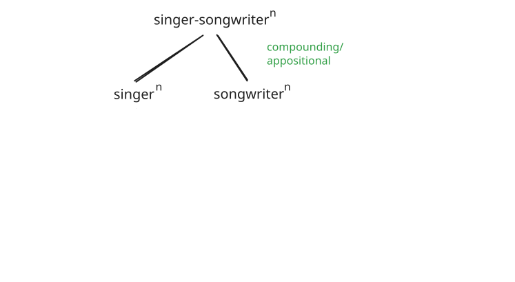
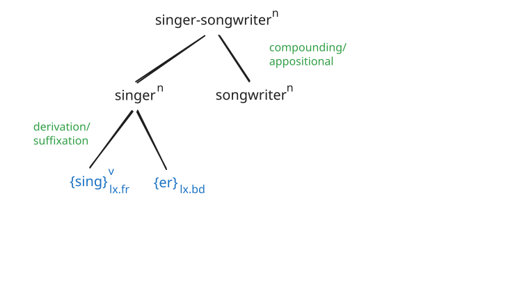
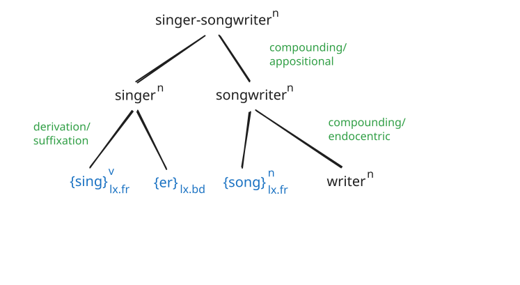
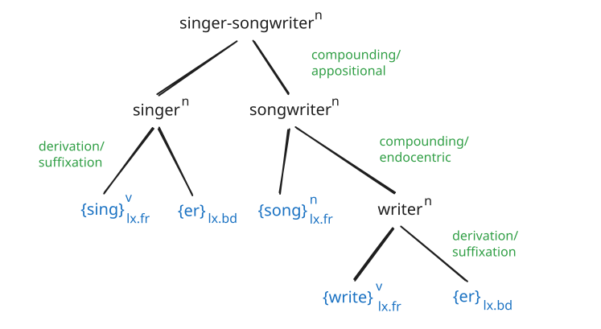
misinterpretations
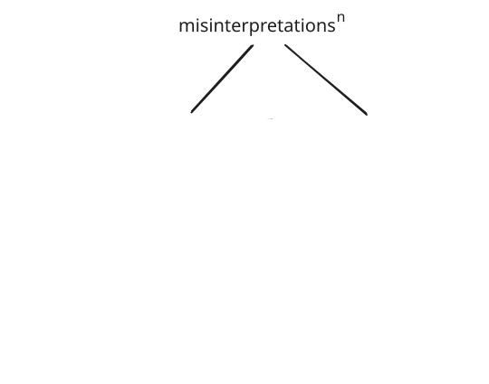
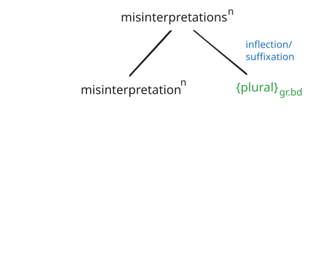
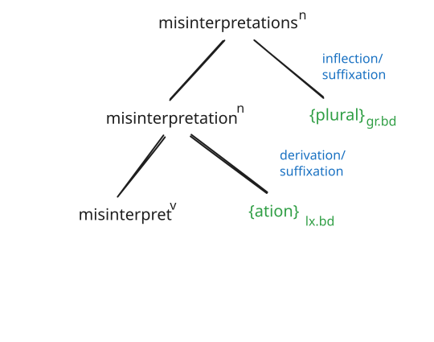
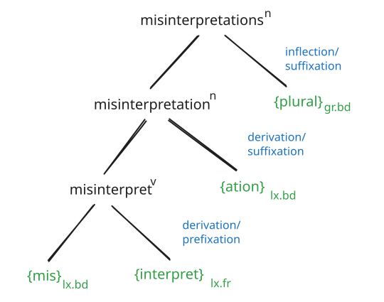
friendships
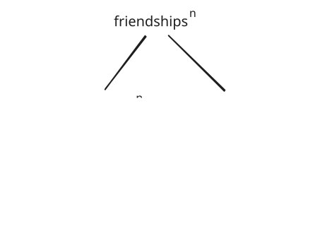
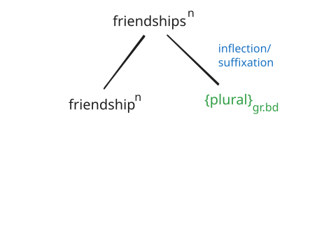
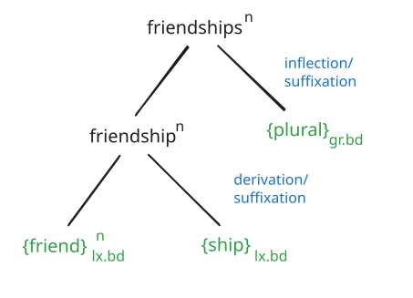
campaigner
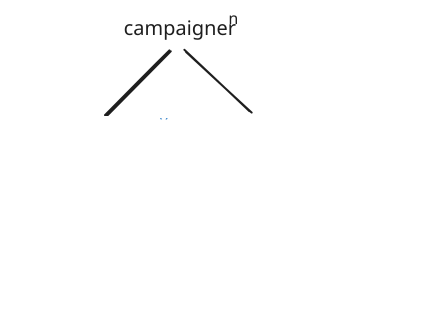
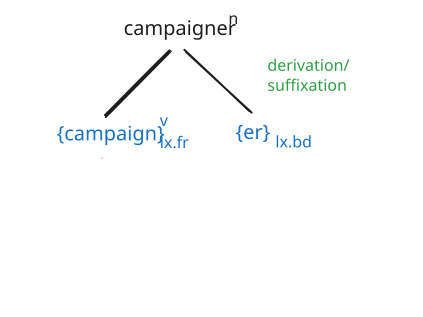
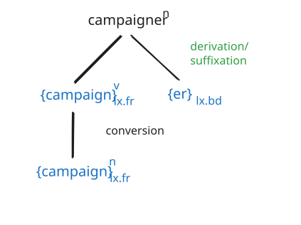
Determine the word-formation process I
Analyse the word-formation processes involved in the following complex words.
- childhood: derivation / suffixation
- paperback: compounding / exocentric
- study-bedroom: compounding / copulative
- foreigner: derivation / suffixation
- paleface: compounding / exocentric
- Oxbridge: blending
- CGEL: initialism
Exercise: determine the word-formation process II
By means of which word-formation process do we arrive at the following lexemes?1
- to enthuse: back-formation from enthusiasm: N>V
- laser: acronymisation from Light Amplification by Stimulated Emission of Radiation
- lab: clipping from laboratory N>N
- Hinglish: blending of Hindin and Englishn
- BBC: alphabetism of British Broadcasting Corporation
- sext: blending of sexn and textn
- to hoover: (N) coinage after American industrialist H. W. Hoover (1849–1932), then conversion N>V
References
Footnotes
When two or more processes are involved specify their order.↩︎